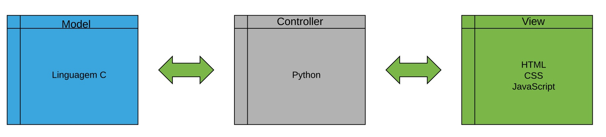

Diagramas
Diagrama BPMN (Business Process Model and Notation)
O diagrama BPMN mostra como é executado são os processos do começo até o fim do projeto mostrando todas as fases.
Diagrama de Contexto
O diagrama de contexto é importante para mostrar as entidades/pessoas que estão presente no sistema e que se comunicam, assim como os dados que o sistema absorve e gera.
Diagrama de Casos de uso
O diagrama de casos de uso é fundamental para definição dos requisitos funcionais do sistema, pois foca nos usuários ou sistemas externos e suas associações com "funções" que o sistema precisa ter.
Documento de requisitos
Clique Aqui!Arquitetura
Essa será nossa arquitetura
Diagrama de Estado
Esse é o nosso diagrama de estado, onde mostra o estado do software do cartão em cada um dos seus passos.

Diagrama de Contexto
O diagrama de contexto é importante para mostrar as entidades/pessoas que estão presentes no sistema e que se comunicam, assim como os dados que o sistema absorve e gera. Temos um diagrama para o sistema de ingressos do site e para o sistema de cartões.


Documento de Arquitetura
Clique Aqui